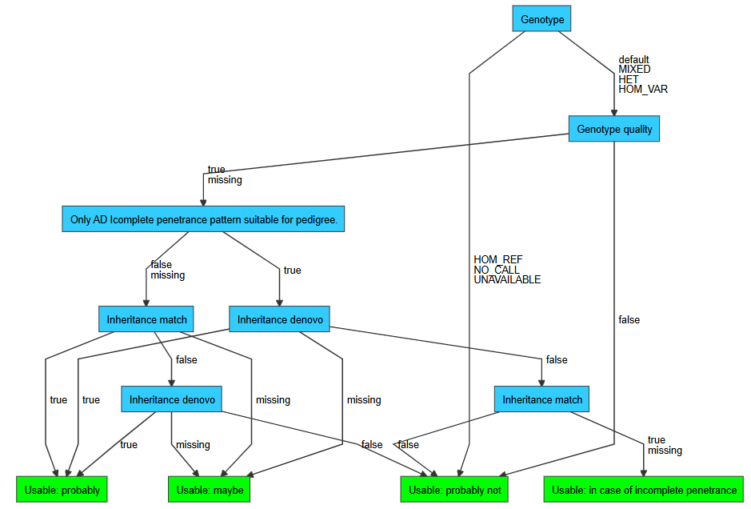

Classification trees¶
In order to end up with a small list of candidate variant records for interpretation VIP performs variant filtration by:
- Classify all variant-consequences based on variant annotations
- Remove variant-consequences based on their classes
- Annotate remaining variant records using inheritance matcher
- Classify all variant-consequences based on variant annotations in the context of samples
- Remove variant-consequences based on their classes.
- Remove variants that had all their variant-consequences removed
The following sections describe the default variant filtration strategies and how to customize classification and filtration.
Default¶
VIP contains default filtration strategies for variant-consequences (GRCh37 and GRCh38) as well as variant-consequences in the context of samples.
Variant-consequences¶
The default decision tree to classify variant-consequences works as follows:
- Each variant-consequence is classified as
Benign,Likely Benign,VUS,Likely Pathogenic,PathogenicorRemove - Variant-consequences classified as
Benign,Likely BenignandRemoveare removed

Above: default GRCh38 variant classification tree
Variant-consequences (samples)¶
The default decision tree to classify variant-consequences in the context of samples works as follows:
- Each variant-consequence-sample is classified as
U1(usable: probably),U2(usable: maybe) andU3(usable: probably not) - Variant-consequences classified as
U3for all samples are removed

Above: default variant sample classification tree
Customization¶
The default variant filtration strategy can be customized using the following parameters (see here):
vcf.classify.GRCh37.decision_treevcf.classify.GRCh38.decision_treevcf.filter.classesvcf.classify_samples.GRCh37.decision_treevcf.classify_samples.GRCh38.decision_treevcf.filter_samples.classes
The following repositories might be of interest when creating a new decision tree:
You are free to use your own set of classes in your decision tree. Keep in mind to update the filter classes parameters accordingly.